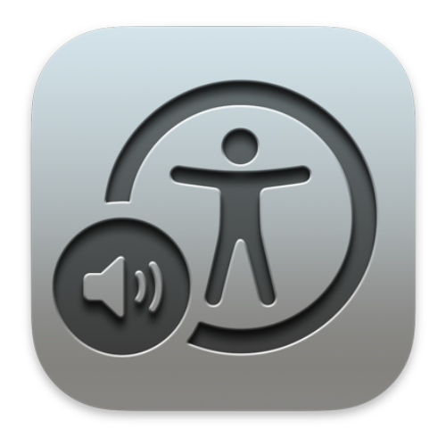
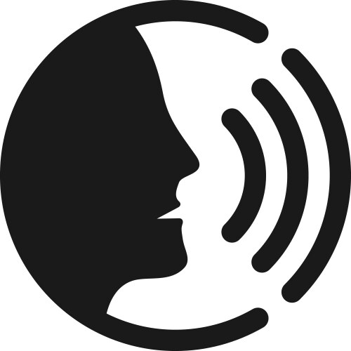
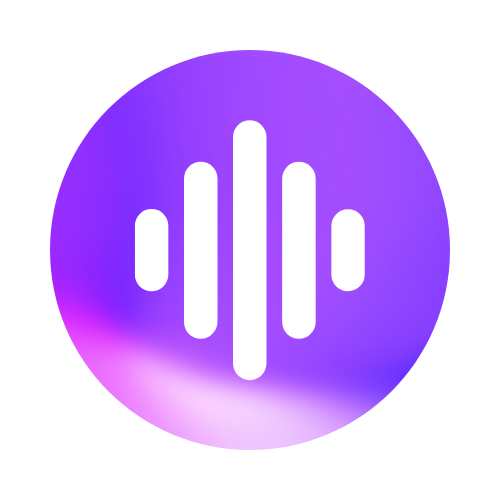

Types of accesible technologies
Screen Readers
These programs read aloud the text displayed on the screen, helping users who are blind or have low vision navigate and interact with their computer. They can describe everything from website content and emails to application menus and documents. Examples include JAWS, NVDA, and VoiceOver. They also provide keyboard shortcuts for navigating without a mouse.
Speech Recognition Software
These tools convert spoken words into text, allowing users to dictate documents, control applications, and navigate their computer hands-free. This is especially useful for users with mobility impairments who find typing challenging. Examples include Dragon NaturallySpeaking and Windows Speech Recognition. They can also execute commands, like opening programs or browsing the web, through voice instructions.
Text-to-Speech (TTS) Software
TTS software converts written text into spoken words, making it easier for users with reading difficulties or visual impairments to consume written content. Applications like NaturalReader can read out loud documents, web pages, and emails. Users can adjust the reading speed, choose different voices, and listen to text instead of reading it, which can also be beneficial for multitasking.